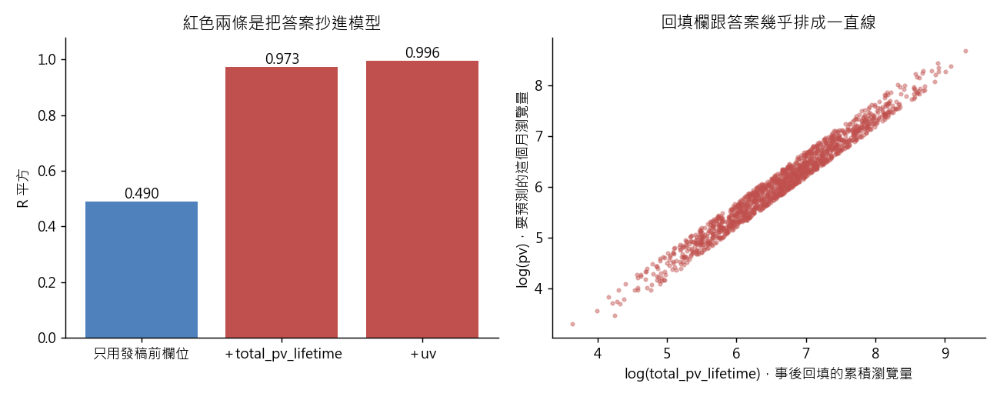

練習 10 - 發稿前預估流量的模型
在本單元中，會介紹第 10 題「內容策略部要一個「發稿前就能預估流量」的模型，主管說準不準看 R 平方就好」從頭到尾實際跑一次的方法、跑出來的數字，以及畫出來的圖。
這一頁是做完之後對答案用的。還沒動手的話，先回 Hub - 資料分析練習案例庫 找到這一題，照「怎麼做」那一欄自己跑一次再回來。
題目
有人會這樣問你：「我們想在稿子送出前就知道它大概會有多少瀏覽量，好決定要不要推首頁、要不要下廣告。先做個原型，看 R 平方多少。」
| 難度 | 挑戰 |
| 組別 | 第 3 組：這個差異是真的嗎 |
| 用哪張表 | content_monthly_flat（L1 檔名 content_monthly_2024_10.csv）、L1 的 DATA_DICTIONARY.md |
| 對應單元 | 為什麼這篇會紅 用迴歸找關聯 |
方法
(1) 先照資料字典「什麼時候才知道」那一欄把欄位分兩堆：按下發布那一秒就存在的（content_type、is_paywalled、word_cnt、headline_len、has_number_in_headline、section_name），以及之後才有的。(2) 只用第一堆跑 log(pv) 的 OLS，記下 R 平方與各係數。(3) 故意把 total_pv_lifetime 加進去再跑一次，再把 uv 加進去跑第三次。(4) 三條的 R 平方與係數並排，最後寫一段「我沒有用哪些欄位、為什麼」。語言用 Python：資料字典那張表可以直接讀進 pandas，用「什麼時候才知道」這一欄寫一行斷言，凡是寫著「事後回填」的欄位就不准進模型——用程式擋住自己，比靠記性可靠。
程式
這一題用 Python，整支程式如下。資料放在 dist/L1 與 dist/L2 兩個資料夾。
from _kmg import *
import statsmodels.formula.api as smf
r = R(10, "內容策略部要一個「發稿前就能預估流量」的模型，主管說準不準看 R 平方就好")
f = dedupe(flat()).copy()
dd = (L1 / "DATA_DICTIONARY.md").read_text(encoding="utf-8")
post = set()
for line in dd.splitlines():
cells = [c.strip() for c in line.strip().strip("|").split("|")]
if len(cells) >= 5 and cells[4] == "事後回填":
post.add(cells[0].strip("`"))
r.chk("資料字典標為事後回填的欄位", ["total_pv_lifetime"], sorted(post))
used = ["content_type", "is_paywalled", "word_cnt", "headline_len", "has_number_in_headline", "section_name"]
assert not set(used) & post, "發稿前模型用到了事後回填欄位"
f["lpv"] = np.log(f["pv"])
f["lwc"] = np.log(f["word_cnt"])
f["pw"] = f["is_paywalled"].astype(int)
f["hn"] = f["has_number_in_headline"].astype(int)
f["ltot"] = np.log(f["total_pv_lifetime"])
f["luv"] = np.log(f["uv"])
base = "lpv ~ C(content_type) + pw + lwc + headline_len + hn + C(section_name)"
m0 = smf.ols(base, data=f).fit()
m1 = smf.ols(base + " + ltot", data=f).fit()
m2 = smf.ols(base + " + ltot + luv", data=f).fit()
r.chk("只用發稿前欄位 R 平方", 0.490, float(m0.rsquared), tol=0.003)
r.chk("加 total_pv_lifetime R 平方", 0.973, float(m1.rsquared), tol=0.003)
r.chk("再加 uv R 平方", 0.996, float(m2.rsquared), tol=0.003)
r.chk("標題數字係數（乾淨）", 0.218, float(m0.params["hn"]), tol=0.003)
r.chk("標題數字係數（加回填欄後）", 0.014, float(m1.params["hn"]), tol=0.003)
r.chk("付費牆係數（乾淨）", -0.291, float(m0.params["pw"]), tol=0.003)
r.chk("付費牆係數（加回填欄後）", -0.003, float(m1.params["pw"]), tol=0.003)
r.chk("total_pv_lifetime 係數", 0.95, float(m1.params["ltot"]), tol=0.01)
ratio = f["total_pv_lifetime"] / f["pv"]
r.chk("total_pv_lifetime ÷ pv 中位數", 1.81, float(ratio.median()), tol=0.01)
r.chk("比值全部大於 1", True, bool((ratio > 1).all()))
r.pit(m1.rsquared - m0.rsquared > 0.4, "加進回填欄，R 平方從 %.3f 跳到 %.3f" % (m0.rsquared, m1.rsquared))
r.sc(bool((ratio > 1).all()), "%s 列的 total_pv_lifetime ÷ pv 全部大於 1、中位數 %.2f，一眼看得出它是累積量" % (
format(len(f), ","), ratio.median()))
fig, ax = plt.subplots(1, 2, figsize=(10, 4))
labels = ["只用發稿前欄位", "＋total_pv_lifetime", "＋uv"]
vals = [m0.rsquared, m1.rsquared, m2.rsquared]
ax[0].bar(labels, vals, color=["#4f81bd", "#c0504d", "#c0504d"])
for i, v in enumerate(vals):
ax[0].text(i, v, "%.3f" % v, ha="center", va="bottom")
ax[0].set_ylim(0, 1.08)
ax[0].set_ylabel("R 平方")
ax[0].set_title("紅色兩條是把答案抄進模型")
ax[1].scatter(f["ltot"], f["lpv"], s=6, alpha=0.4, color="#c0504d")
ax[1].set_xlabel("log(total_pv_lifetime)，事後回填的累積瀏覽量")
ax[1].set_ylabel("log(pv)，要預測的這個月瀏覽量")
ax[1].set_title("回填欄跟答案幾乎排成一直線")
save_fig(fig, "ex10_leak_r2.png")
r.save()
程式裡的 r.chk(項目, 預期值, 實算值) 是對照檢查，把入口頁寫的數字跟實際算出來的放在一起比；r.pit 記錄坑有沒有出現，r.sc 記錄自己驗那一步有沒有效。畫圖的部分在程式最後面。
程式開頭的 from _kmg import * 載入共用的讀檔、去重、換幣別與畫圖函式，內容在 練習 01 - 月會上的則數對不對 的「共用的讀檔函式」那一段。
結果
只用發稿前的欄位，R 平方 0.490。加進 total_pv_lifetime，R 平方跳到 0.973，而且原本的係數同時被壓扁：標題數字從 0.218 掉到 0.014、付費牆從 -0.291 掉到 -0.003，total_pv_lifetime 自己拿走 0.95。再加 uv，R 平方 0.996。這不是模型變準，是把答案抄進去了：total_pv_lifetime 是事後回填的累積瀏覽量，它本來就把這個月的 pv 包在裡面；uv 跟 pv 是同一群人的兩種數法。這兩個欄位在稿子發出去的那一秒都還不存在，拿來做發稿前預估等於跟未來借數字。
實際跑出來的數字
下表每一列都是程式實際算出來的值，11 項全部跟上面那段文字對得起來。
| 項目 | 實跑結果 |
|---|---|
| 資料字典標為事後回填的欄位 | total_pv_lifetime |
| 只用發稿前欄位 R 平方 | 0.4904 |
| 加 total_pv_lifetime R 平方 | 0.9727 |
| 再加 uv R 平方 | 0.9964 |
| 標題數字係數（乾淨） | 0.2182 |
| 標題數字係數（加回填欄後） | 0.0143 |
| 付費牆係數（乾淨） | -0.2914 |
| 付費牆係數（加回填欄後） | -0.0025 |
| total_pv_lifetime 係數 | 0.9514 |
| total_pv_lifetime ÷ pv 中位數 | 1.8083 |
| 比值全部大於 1 | 是 |
圖表

左圖是三個模型的 R 平方，紅色兩個是把事後才有的欄位放進去。右圖是回填欄與這個月瀏覽量的散佈圖，幾乎排成一直線，所以它能讓 R 平方跳到 0.97。
這題的坑，實際跑的時候有沒有出現
回填欄造成的資料洩漏，症狀就是假高的 R 平方。判準很白話：流量預測做到 R 平方 0.97，在真實世界幾乎不可能發生，R 平方高得不像話的時候第一件事是回頭查欄位，不是開香檳。還有一個反方向的坑：把洩漏欄位清掉之後 R 平方掉到 0.49，很多人會覺得模型「壞掉了」而想把欄位偷偷加回去——0.49 才是這個模型真正的能力，而且它仍然只是關聯，不是「照著做就會紅」。
實際跑的結果：加進回填欄，R 平方從 0.490 跳到 0.973。
自己驗那一步抓不抓得到錯
對每一個放進模型的欄位問同一句話：「這篇稿子按下發布的那一秒，這個數字存在嗎？」有一個答不出來就拿掉。再把 total_pv_lifetime 除以 pv 印出來看——中位數 1.81，而且 1438 列全部大於 1，你會直接看到它是一個「連統計月份之後發生的事都算進去了」的累積量。
實際跑的結果：1,438 列的 total_pv_lifetime ÷ pv 全部大於 1、中位數 1.81，一眼看得出它是累積量。
接著做
上一題 練習 09 - 付費牆讓流量掉幾成、下一題 練習 11 - 加推名單的門檻，或回到 Hub - 資料分析練習案例庫 挑別的題目。
學生版｜更新於 2026-09-13 10:38